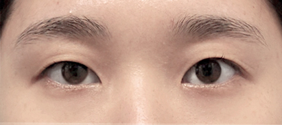
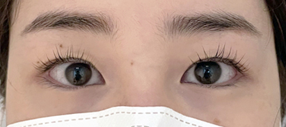
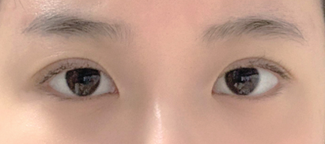
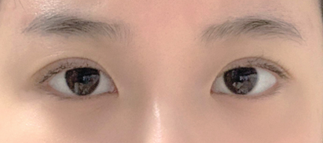
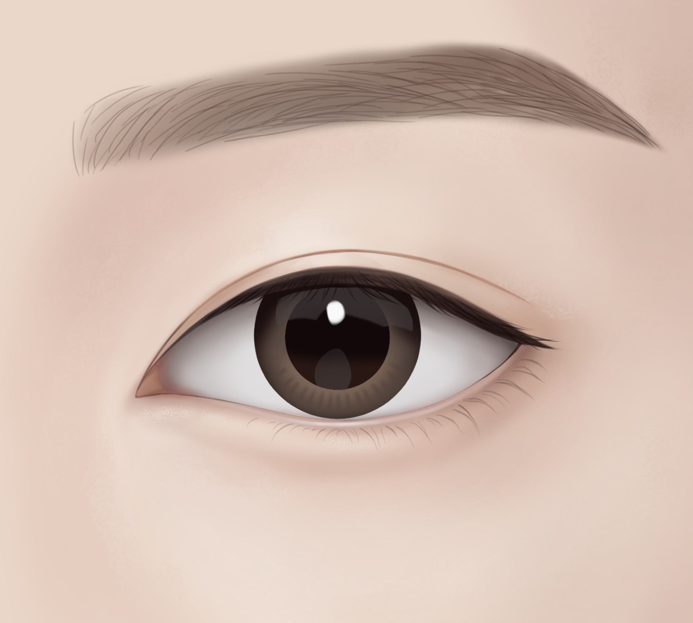

처진 눈꺼풀만 티 안 나고
자연스럽게 교정하여
또렷하고 생기있는 동안 눈매를 완성하고 싶다면
AMOND
눈썹하거상
눈썹 라인 밑 미세 절개로 흉터 및 부기 최소화
리프팅 효과로 피부 탄력 및 주름 개선과 예방을 한번에
눈꺼풀 처짐 교정으로 기능적•심미적 개선을 동시에
아몬드 눈썹하거상은 처진 눈꺼풀 피부를 당겨주어 가려져 있던 기존의 쌍꺼풀 라인을 더욱 선명하고 또렷해 보이게 하며,
이마를 사용해 눈을 뜨던 습관을 교정하여 이마에 자리 잡힌 깊은 주름까지 개선될 수 있도록 도움을 주어 현재보다 10년 이상 더 젊었을 때의 생기있던
동안 눈매를 다시 찾아드리는 맞춤형 멀티 안티에이징 솔루션입니다.
-
수술시간
1시간 내외
-
마취방법
수면/국소
-
실밥제거
5~7일 후
-
회복기간
큰 부기 실밥제거 전후
-
흉터
눈썹 라인 밑 미세 절개로
흉터 최소화
미용 + 기능까지 동시에 잡은
아몬드 눈썹하거상술
-
수술전
한달차

-
수술전
한달차


-
수술전
한달차

-
수술전
한달차


-
수술전
한달차
 

-
수술전
한달차


<< 좌우로 스크롤을 움직여 확인해보세요. >>
눈썹하거상이 필요한 경우
-
01.
눈꺼풀이 처져 나이가 들어 보이시는 분
-
02.
눈가 처짐으로 인상이 답답해 보이시는 분
-
03.
눈가 주름이 심하신 분
-
04.
쌍꺼풀은 건드리지 않고 눈가 리프팅을 원하시는 분
-
05.
늘어진 피부가 시야를 방해 하시는 분
-
06.
눈을 뜨기 위해 눈썹을 들면 이마 혹은 미간에 주름이 생기시는 분
아몬드 눈썹하거상
Check Point- Point 01
- Point 02
- Point 03
눈썹하거상 수술방법
아몬드성형외과 원장님의 특화된 수술 방법!
-

맞춤 디자인으로
눈썹 아래 라인을 최소 절개 -

불필요한 피부 제거 후
처진 눈꺼풀을 고정 및 당김 -

고정 후 흉터 최소화를 위해
꼼꼼히 봉합 -

자연스러운 수술 결과
-
STEP1
맞춤 디자인으로
눈썹 아래 라인을 최소 절개 -
STEP2
불필요한 피부 제거 후
처진 눈꺼풀을 고정 및 당김 -
STEP3
고정 후 흉터 최소화를 위해
꼼꼼히 봉합
-
STEP1
-
STEP2
-
STEP3
A MOMENT OF NEW DAY